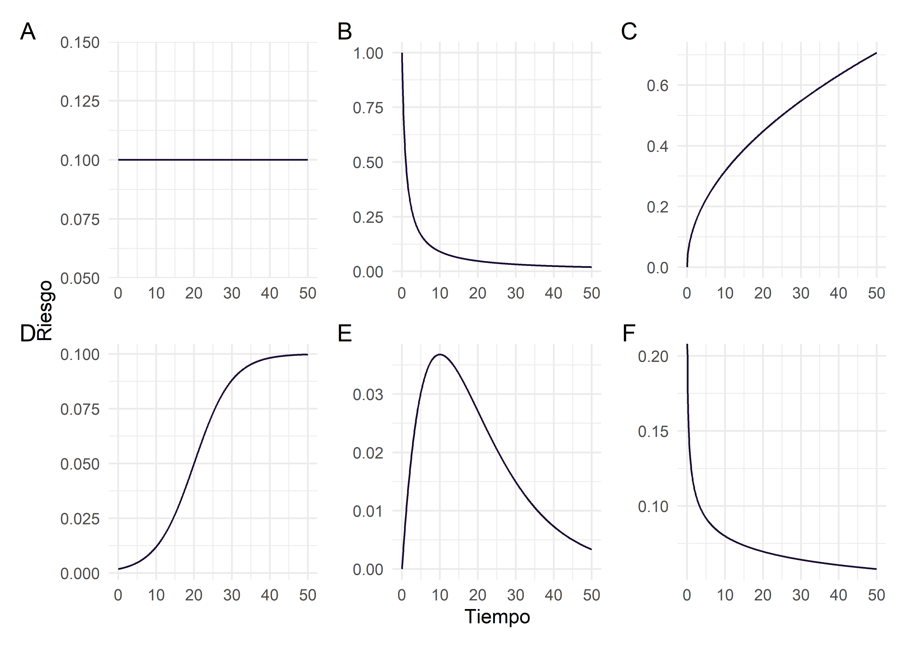
Métodos para el análisis de supervivencia
Andrea Silva ![]()
Tamara Ricardo
Funciones básicas
En el análisis de supervivencia, se busca modelar una variable aleatoria continua y no negativa, denotada por \(T\), que representa el “tiempo hasta un evento determinado” para cada individuo del estudio. A continuación, se describen sus cuatro funciones fundamentales.
Función densidad de probabilidad
Como toda variable aleatoria continua, \(T\) posee una función de densidad de probabilidad, \(f(t)\), que ya presentamos en la primera parte. Esta función puede interpretarse como la probabilidad de que un individuo experimente el evento en un intervalo instantáneo de tiempo. Asociada a ella, también se encuentra la función de distribución acumulada \(F(t)\), que representa la probabilidad de que el evento ocurra en un intervalo determinado: [\(t_1\), \(t_2\)].
Función de supervivencia
La función de supervivencia, \(S(t)\), indica la probabilidad de que un individuo no experimente el evento hasta al menos el tiempo \(t\), es decir, que “sobreviva” hasta ese momento.
Función de riesgo (hazard)
En el contexto del análisis de supervivencia, suele mantenerse el término en inglés hazard, aunque su traducción aproximada es “riesgo”, ya que asume ciertas particularidades. Esta función permite analizar el riesgo instantáneo de que un individuo experimente el evento entre el tiempo \(t\) y \(t+\varepsilon\), dado que sobrevivió hasta el tiempo \(t\). Por ejemplo, para responder a preguntas como: ¿cuál es el riesgo de un paciente de fallecer después de una cirugía a corazón abierto?, deberemos conocer esta función de riesgo.
Se simboliza como \(h(t)\) o \(\lambda(t)\) y la expresión es:
\[ h(t) = \lim_{n\rightarrow \infty}((t<T<t+\varepsilon)|T>t)/\varepsilon \]
Esta expresión puede interpretarse, aproximadamente, como la probabilidad de morir en el intervalo (\(t\), \(t + \Delta t\)], dado que se está vivo al tiempo \(t\), o bien de forma general como la probabilidad de presentar el evento en dicho intervalo. Podemos interpretarla como una medida de intensidad de muerte al tiempo \(t\), o una medida de muerte potencial al tiempo \(t\), o en forma general, como una medida de intensidad de eventos a dicho tiempo.
La función de riesgo recibe otros nombres como: tasa de fallo, función o tasa de incidencia, fuerza de mortalidad condicional o simplemente fuerza de mortalidad. Es importante resaltar que a pesar de llevar el nombre de riesgo; \(h(t)\) es una tasa y no una probabilidad, es por eso que a veces se prefiere usar el término hazard. Su unidad es \(tiempo^{-1}\) y puede asumir cualquier valor real mayor que cero.
Una de sus principales utilidades es guiar la elección de un modelo paramétrico adecuado para los datos de supervivencia. En muchos contextos, el investigador tiene una noción previa sobre cómo varía el riesgo a lo largo del tiempo, lo que puede facilitar la elección de una función específica para \(h(t)\). Para entender un poco mejor esto último observemos detenidamente la siguiente figura:
El gráfico A muestra una función de riesgo constante en el tiempo. Por ejemplo: riesgo de fracturas de escolares de 5to grado durante un año.
El gráfico B muestra una función de riesgo que decrece en el tiempo. Por ejemplo: el riesgo post-quirúrgico, que es mayor en los primeros días post cirugía y luego cae con el tiempo.
El gráfico C muestra una función de riesgo que se incrementa con el tiempo. Por ejemplo: si estudiamos el “tiempo hasta la solidificación de una fractura ósea”, en un primer momento el “riesgo de solidificación” de la fractura es nulo, y a medida que transcurre el tiempo se incrementa.
Los gráficos D-F presentan patrones más complejos de riesgo que pueden representar situaciones específicas.
Para cerrar diremos que la función de riesgo marca la dinámica del proceso estudiado, al dar sus valores una adecuada aproximación a la tasa de incidencia del evento de interés.
Función de riesgo acumulado
A partir de la función de riesgo (\(h(t)\)) es posible calcular la función de riesgo acumulado, que se simboliza como \(\Lambda(t)\) o \(H(t)\). Esta función mide el riesgo de ocurrencia de un evento hasta un determinado tiempo \(t\). Matemáticamente implica la suma de todos los riesgos en todos los tiempos hasta el tiempo \(t\).
La expresión matemática es:
\[ H(t)=\int_0^t h(u)du \]
Por ejemplo, permite responder preguntas como: ¿Cuál es el riesgo acumulado de morir en el primer año luego del diagnóstico de SIDA? ¿Y en los primeros dos años?
Las funciones fundamentales del análisis de supervivencia están estrechamente relacionadas entre sí y son matemáticamente equivalentes. A continuación se resumen sus principales relaciones, omitiremos aquí dichas deducciones, pero hagan un acto de fe y crean en las siguientes equivalencias:
\(S(t)=1-F(t)\)
\(h(t)=-\frac{dln(S(t))}{dt}\)
\(h(t)=\frac{f(t)}{S(t)}\)
\(h(t)=\frac{f(t)}{1-F(t)}\)
\(H(t)=-ln(S(t))\)
\(S(t)=exp(-H(t))\)
Una vez que estimamos una de ellas, será posible obtener cualquiera de las demás.
Modelos paramétricos
En esencia, cualquier distribución definida sobre los números reales no negativos puede utilizarse para modelar el tiempo hasta la ocurrencia de un evento. Sin embargo, en la práctica, solo un pequeño conjunto de distribuciones es ampliamente utilizado en análisis de supervivencia. Las más frecuentes son la exponencial, la Weibull y la lognormal.
Distribución exponencial
Al asumir que la variable aleatoria T posee una distribución exponencial, su \(f(t)\) será:
\[ f(t) = \alpha e^{-\alpha t} \quad (\alpha>0) \]
Utilizando las relaciones entre las funciones básicas de supervivencia se deducen:
\(S(t)=e^{-\alpha t}\)
\(h(t)=\frac{f(t)}{S(t)}=\frac{\alpha e^{-\alpha t}}{e^{-\alpha t}}\)
\(H(t) = -lnS(t)=\alpha t\)
Como podemos ver, al asumir una distribución exponencial para la variable “tiempo hasta que el evento se produzca”, el riesgo es constante en el tiempo y el riesgo acumulado es una función lineal del tiempo:
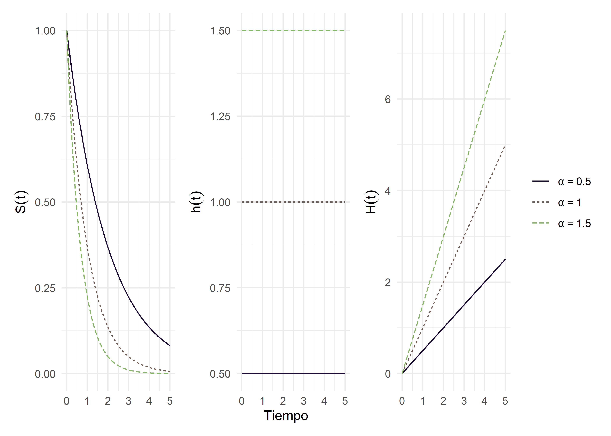
Asumir una distribución exponencial para los tiempos de sobrevida es similar a suponer una distribución normal para otras variables: se trata de una elección que facilita el modelado. Sin embargo, en la práctica es una situación muy rara. Como mencionamos anteriormente, una posible excepción sería el riesgo de fractura en escolares de 5º grado a lo largo de un año escolar. Pero no existen demasiadas situaciones en salud donde el riesgo sea constante, en la mayoría de las situaciones el riesgo varía en el tiempo, usualmente incrementándose con la edad del individuo.
Uno de los parámetros clave en el análisis de supervivencia es la mediana de los tiempos de supervivencia, es decir, el tiempo en el cual el 50% de los individuos ha experimentado el evento. Para el caso exponencial:
\(S(t)=e^{-\alpha t}=0,5\)
\(-\alpha t=ln(0,5)\)
\(\alpha t=ln(2)\)
\(T_{mediano}=\frac{ln(2)}{\alpha}\)
A pesar de su simplicidad, la suposición de un riesgo constante limita seriamente la aplicabilidad del modelo exponencial en contextos de salud.
Distribución Weibull
La distribución Weibull es una generalización de la exponencial, ampliamente utilizada en contextos biomédicos. Su función de densidad es:
\[ f(t)=\gamma\alpha^\gamma t^{\gamma-1}exp(-(\alpha t)^\gamma) \qquad (\alpha>0, \gamma>0) \]
A partir de esta expresión, se deducen:
\(S(t)=exp(-(\alpha t)^\gamma)\)
\(h(t) = \gamma\alpha^\gamma t^{\gamma-1}\)
\(H(t)=-lnS(t)=(\alpha t)^{\gamma-1}\)
La distribución Weibull tiene dos parámetros:
\(\alpha\), que regula la escala del modelo
\(\gamma\), que controla la forma de la función de riesgo:
Si \(\gamma < 1\), la función de riesgo es decreciente
Si \(\gamma>1\), la función de riesgo es creciente
Si \(\gamma = 1\), la función de riesgo es constante y equivale a una distribución exponencial
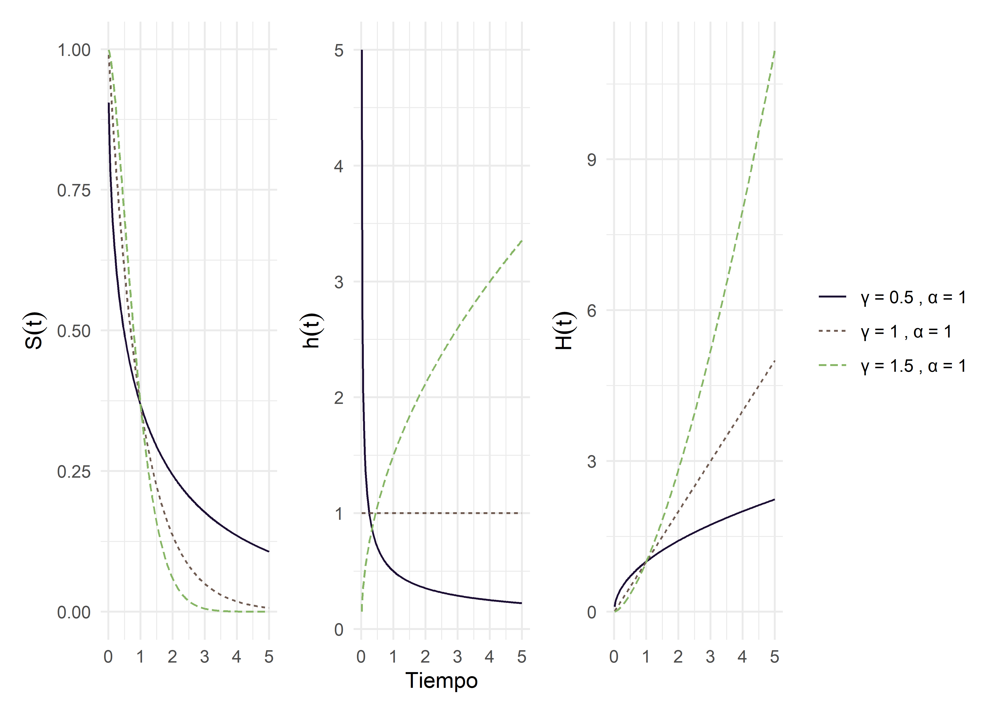
Para encontrar el tiempo mediano de supervivencia, procedemos en forma análoga que en la distribución exponencial:
\(S(t)=exp(-(\alpha t)^\gamma)=0,5\)
\(-(\alpha t)^\gamma=ln(0,5)\)
\(T_{mediano}=\frac{ln(2)^{1/\gamma}}{\alpha}\)
Dejaremos de lado la distribución lognormal, para pasar ahora a los métodos no paramétricos de estimación.
Métodos no paramétricos
A continuación, abordaremos dos métodos no paramétricos para estimar las funciones básicas de supervivencia. Ambos se basan en las denominadas tablas de vida, que describen el proceso de mortalidad de una cohorte hasta la desaparición del último de sus integrantes bajo la experiencia de mortalidad observada en un período determinado. Estas tablas finalizan con la muerte de todos los sujetos, y su principal diferencia radica en la velocidad con que se alcanza dicho final.
Las tablas de vida se utilizan principalmente en salud pública para medir mortalidad y supervivencia, aunque también son aplicadas en estudios demográficos y actuariales, para analizar longevidad, fertilidad, migraciones, crecimiento poblacional, proyecciones y años de vida sin discapacidad. En resumen, es una presentación tabular del progreso de una cohorte a través del tiempo que transcurre.
Las curvas de supervivencia pueden construirse mediante dos métodos: el método de Kaplan-Meier o el análisis actuarial de Cutler-Ederer. Ambos permiten estimar la supervivencia en presencia de censura. Además, existe un estimador no paramétrico de la función de riesgo acumulado, conocido como estimador de Nelson-Aalen, que no será abordado en este curso.
Método actuarial
En este método, los tiempos de supervivencia se agrupan en intervalos, cuya duración puede variar según la frecuencia del evento de interés y puede no ser de la misma longitud. Una limitación de este enfoque es la menor precisión en muestras pequeñas. Sin embargo, en muestras grandes, su influencia sobre las estimaciones es reducida y permite estimar también la función de riesgo. Se asume que las observaciones censuradas se distribuyen homogéneamente dentro de cada intervalo.
Antes de continuar con el ejemplo se sugiere ver la siguiente videoclase:
Consideremos el ejemplo de un estudio de supervivencia pos trasplante hepático en una cohorte de 300 pacientes, seguidos durante cinco años (2009-2014). La siguiente tabla (Tabla 1) presenta los datos iniciales:
| Año ingreso | Año | Vivos | Muertes | Pérdidas | Muertes por otras causas | Vivos al final del estudio |
|---|---|---|---|---|---|---|
| 2009 | 2009 | 60 | 21 | 4 | 1 | 18 |
| 2009 | 2010 | 34 | 6 | 1 | 0 | |
| 2009 | 2011 | 27 | 4 | 0 | 1 | |
| 2009 | 2012 | 22 | 2 | 1 | 0 | |
| 2009 | 2013 | 19 | 1 | 0 | 0 | |
| 2010 | 2010 | 67 | 23 | 3 | 2 | 20 |
| 2010 | 2011 | 39 | 8 | 2 | 1 | |
| 2010 | 2012 | 28 | 3 | 1 | 0 | |
| 2010 | 2013 | 24 | 3 | 0 | 1 | |
| 2011 | 2011 | 53 | 18 | 3 | 0 | 23 |
| 2011 | 2012 | 32 | 5 | 1 | 0 | |
| 2011 | 2013 | 26 | 2 | 0 | 1 | |
| 2012 | 2012 | 64 | 22 | 5 | 2 | 25 |
| 2012 | 2013 | 35 | 7 | 2 | 1 | |
| 2013 | 2013 | 56 | 19 | 2 | 1 | 34 |
Para interpretar la información de la tabla, es necesario considerar que la misma presenta la evolución anual de los pacientes que fueron admitidos en el estudio año a año. En 2009 se incorporaron 60 pacientes, de los cuales 21 fallecieron, cuatro se perdieron en el seguimiento (se ignora si sobrevivieron o fallecieron) y uno murió por causas ajenas al trasplante. Estos últimos cinco pacientes corresponden a observaciones censuradas. Para el año 2010, 34 pacientes del grupo original y se sumaron 67 nuevos participantes al estudio.
Cada paciente que ingresa durante cada uno de los años del estudio contribuye con información a lo que ocurre durante el primer año de supervivencia:
Un total de 300 pacientes ingresaron vivos al estudio: \(60 + 67 + 53 + 64 + 56 = 300\)
Durante el primer año de seguimiento murieron 103 pacientes: \(21 + 23 + 18 + 22 + 19 = 103\)
Para estimar la probabilidad de morir en un período, se divide el número de muertes en cada período por el número de individuos en riesgo al comienzo del periodo de observación.
Pero; ¿qué hacemos con los sujetos que se perdieron, es decir los individuos censurados? Al clasificar los datos en intervalos de tiempo discretos (como hemos hecho en nuestra tabla), no podremos decir en qué momento se han perdido exactamente: ¿diremos que han sido individuos en riesgo durante todo el año (o período? Lo que el método actuarial asume es una solución “salomónica”: las observaciones censuradas, que se contabilizan como media persona-año:
\[ P(morir)=\frac{muertes\; en \; el \; período}{indiv.en\;riesgo\;al\;comienzo\;del\;período-\frac{indiv.censurados}{2}} \]
Recordemos que los individuos censurados serán quienes están vivos al final del periodo, los que se han perdido y quienes han muerto por causas ajenas al estudio. En nuestra nueva tabla (Tabla 2), esta probabilidad se notará como \(q_i\)
Por lo tanto, para el primer periodo:
\[ q_i = \frac{103}{300-\frac{23+34}{2}}=0,379 \]
La probabilidad de supervivencia condicional, \(p_i\), que denota la probabilidad de sobrevivir a un determinado periodo, se calcula como:
\[ p_i = 1 - q_i \]
La probabilidad acumulada de supervivencia \(S(t)\), que muestra la probabilidad de sobrevivir hasta un tiempo determinado, considerando que se ha sobrevidido a los tiempos anteriores se obtiene multiplicando las probabilidades de supervivencia en los períodos anteriores. Es decir que la probabilidad de sobrevivir al tercer año a partir del trasplante será:
\[ S(3) = 0,621 * 0,789 * 0,868 = 0,425~(42,5\%) \]
Esto indica que el 42,5% de los pacientes sobreviven al menos tres años luego del trasplante:
| Periodo | Vivos | Muertes | Pérdidas/muertes otras causas | Vivos al final del estudio | q | p | S(t) |
|---|---|---|---|---|---|---|---|
| 1 | 300 | 103 | 23 | 34 | 0.379 | 0.621 | 0.621 |
| 2 | 140 | 26 | 8 | 25 | 0.211 | 0.789 | 0.490 |
| 3 | 81 | 9 | 3 | 23 | 0.132 | 0.868 | 0.425 |
| 4 | 46 | 5 | 2 | 20 | 0.143 | 0.857 | 0.364 |
| 5 | 19 | 1 | 0 | 18 | 0.100 | 0.900 | 0.368 |
Puede luego graficarse \(S(t)\) vs periodo (Figura 4). Sobre el gráfico se pueden ubicar los cuartiles y en particular, la mediana de los tiempos de supervivencia, que indica el momento donde la supervivencia es del 50%.
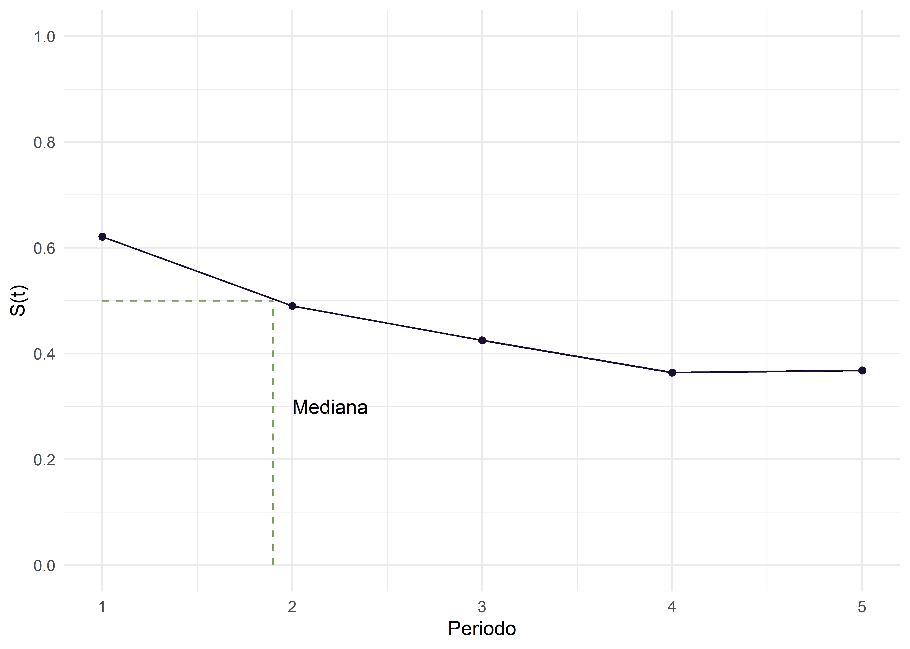
Método de Kaplan-Meier
El método de Kaplan-Meier (KM) utiliza una lógica similar al actuarial, pero permite trabajar con datos individuales y periodos más cortos, siendo particularmente útil cuando el tamaño muestral es reducido. La probabilidad de supervivencia al tiempo \(t\) se estima considerando que es independiente de la supervivencia a otros tiempos, entonces la probabilidad de alcanzar el tiempo \(t\) es el producto de alcanzar los tiempos anteriores:
\[S_{KM}(t)=\prod_{i:ti<t}(1-d_i/n_1) \]
donde \(d_i\) es el número de eventos y \(n_i\) el número de personas expuestas en el tiempo \(t_i\).
La característica distintiva es que la proporción acumulada que sobrevive se calcula para el tiempo de supervivencia individual de cada paciente y no se agrupan los tiempos de supervivencia en intervalos.
Antes de continuar con el ejemplo se sugiere ver la siguiente videoclase:
Para nuestro ejemplo consideraremos una cohorte cerrada de 10 pacientes con dos años de seguimiento. El evento es muerte por enfermedad cardiovascular (ECV). En la siguiente figura se muestra el esquema del seguimiento, donde “C” indica censura y “M” el evento:
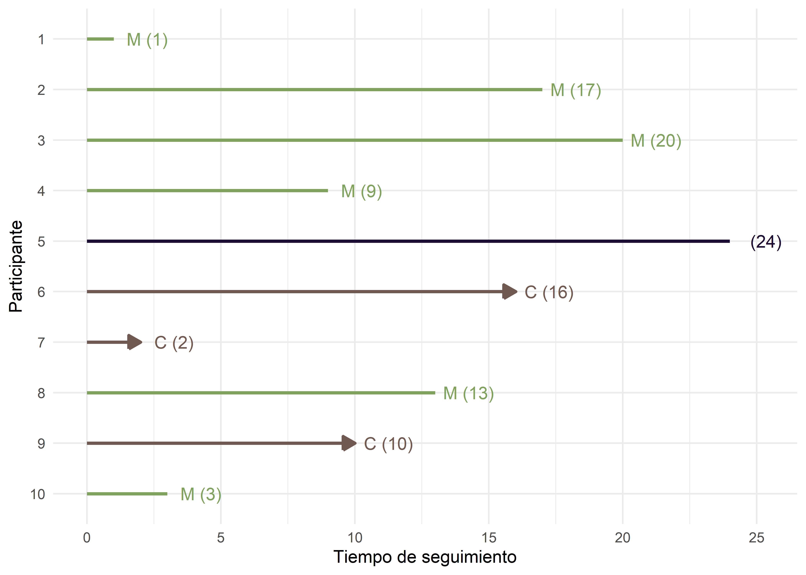
La información de esta figura se resume en la Tabla 3. Es importante señalar que la base de datos para análisis de supervivencia debe tener la siguiente estructura: cada fila es un individuo en seguimiento, debe consignarse el tiempo inicial y el tiempo final del seguimiento (en este caso, el tiempo inicial es el mismo para todos porque se trata de una cohorte cerrada, pero esto no es lo más frecuente), el tiempo de seguimiento \(t\) (se obtiene de la diferencia tiempo final y tiempo inicial) y la variable status, que indica si el paciente sufrió el evento (status:1) o es un paciente censurado (status:0).
| Paciente | Tiempo inicial | Tiempo final | t (meses) | status |
|---|---|---|---|---|
| 1 | 0 | 1 | 1 | 1 |
| 2 | 0 | 17 | 17 | 1 |
| 3 | 0 | 20 | 20 | 1 |
| 4 | 0 | 9 | 9 | 1 |
| 5 | 0 | 24 | 24 | 0 |
| 6 | 0 | 16 | 16 | 0 |
| 7 | 0 | 2 | 2 | 0 |
| 8 | 0 | 13 | 13 | 1 |
| 9 | 0 | 10 | 10 | 0 |
| 10 | 0 | 3 | 3 | 1 |
Para la construcción de la tabla de supervivencia, lo primero que debemos hacer es ordenar los pacientes de acuerdo a su tiempo.
Entonces, la Tabla 3, se transforma en la Tabla 4:
| Paciente | tiempo | status |
|---|---|---|
| 1 | 1 | 1 |
| 7 | 2 | 0 |
| 10 | 3 | 1 |
| 4 | 9 | 1 |
| 9 | 10 | 0 |
| 8 | 13 | 1 |
| 6 | 16 | 0 |
| 2 | 17 | 1 |
| 3 | 20 | 1 |
| 5 | 24 | 0 |
Comencemos con la construcción de la tabla de supervivencia (Tabla 5), teniendo en cuenta que aquí conocemos exactamente el tiempo en el que un individuo estuvo en riesgo de morir por ECV. Esta tabla se construye a partir de los individuos que tuvieron el evento.
| Tiempo | Individuos en riesgo | Eventos | Prob. evento | Prob. supervivencia | S(t) |
|---|---|---|---|---|---|
| 0 | 10 | 0 | 0.000 | 1.000 | 1.000 |
| 1 | 10 | 1 | 0.100 | 0.900 | 0.900 |
| 3 | 8 | 1 | 0.125 | 0.875 | 0.787 |
| 9 | 7 | 1 | 0.143 | 0.857 | 0.675 |
| 13 | 5 | 1 | 0.200 | 0.800 | 0.540 |
| 17 | 3 | 1 | 0.333 | 0.667 | 0.360 |
| 20 | 2 | 1 | 0.500 | 0.500 | 0.180 |
Una vez obtenida la \(S(t)\), se grafica:
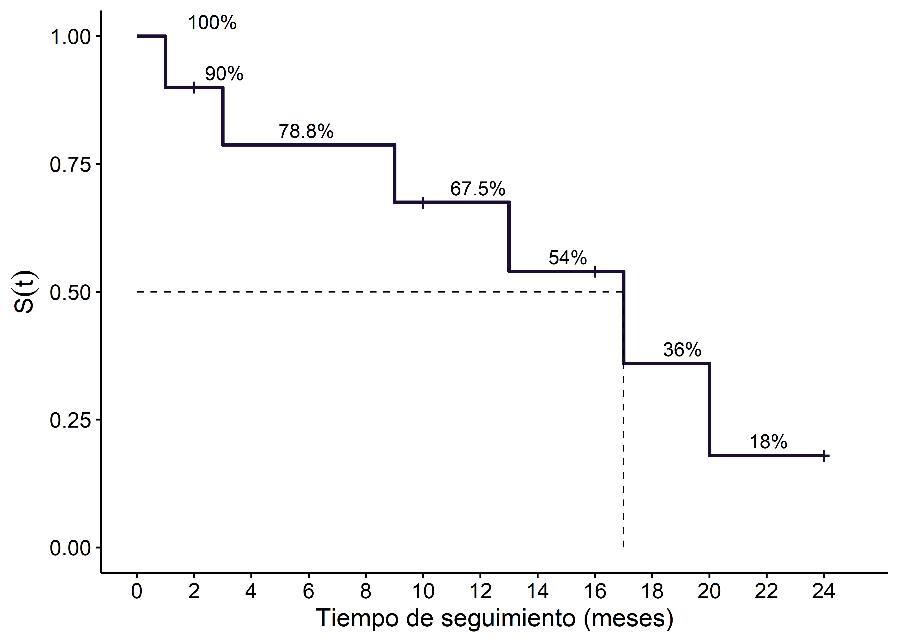
Las curvas de supervivencia de Kaplan-Meier son representaciones escalonadas que describen cómo evoluciona la supervivencia acumulada a lo largo del tiempo. Cada descenso en la curva —es decir, cada “escalón”— se produce cuando ocurre un evento (por ejemplo, una muerte), lo que refleja una disminución en la probabilidad de supervivencia acumulada hasta ese instante.
Resumiendo, para construir una curva de supervivencia se deben dar los siguientes pasos:
Ordenar los tiempos de supervivencia (o tiempos de observación) en forma ascendente.
Construir una tabla que contenga: una columna con los tiempos observados para cada participante (\(t_i\)) y una columna con el estado del individuo al final del seguimiento (status).
Calcular la probabilidad de supervivencia en cada tiempo (\(s_i / n_i\)), es decir, el cociente entre el número de individuos que sobreviven (\(s_i\)) y el número de individuos en riesgo de sufrir el evento en ese instante (\(n_i\)). Esta columna sólo tendrá valores en los momentos en que ocurre un evento. Es importante señalar que, en el denominador (\(n_i\)), se incluyen también los individuos que van a experimentar el evento en ese período, ya que entran al periodo vivos.
Obtener la supervivencia acumulada, multiplicando en cada periodo de tiempo los cocientes de supervivencia (\(s_i\)/\(n_i\)) por los productos acumulados de los tiempos anteriores.
Representar gráficamente la curva. La línea comienza en 1 (100% de supervivencia) y se mantiene constante hasta que ocurre el primer evento, momento en el que desciende un escalón. Este patrón se repite a medida que ocurren nuevos eventos. Por ejemplo, si la supervivencia cae a 0,90 tras el primer evento, ese valor se mantendrá hasta el siguiente.
Algunos investigadores optan por representar también curvas de incidencia acumulada, que refleja la probabilidad de experimentar el evento a lo largo del tiempo. Esta también puede calcularse a partir de la tabla de vida generada mediante el método de Kaplan-Meier. Por ejemplo, en la Tabla 5, bastaría con usar la columna “Probabilidad del evento” y obtener la probabilidad acumulada multiplicando las probabilidades de distintos tiempos.
Hasta aquí aprendimos a calcular la \(S(t)\) a partir de nuestros datos, ya sea por el método actuarial o por el de KM. Todo esto que hicimos “a mano” aquí, las funciones del lenguaje R lo hacen y nos facilitan el trabajo.
Ahora podríamos plantearnos distintos interrogantes, según el estudio, como por ejemplo:
¿La curva será una buena estimación tanto para hombres como para mujeres? Es decir: ¿la variable sexo afecta al tiempo de supervivencia?
O también: ¿el tratamiento afecta el tiempo de supervivencia? Para ello será necesario comparar curvas de supervivencia.
Responder estas preguntas requiere comparar curvas de supervivencia entre grupos, lo cual veremos a continuación.
Comparación de curvas de supervivencia
Para responder a las preguntas anteriores, la estrategia de KM es estratificar según la variable de interés (sexo en el primer ejemplo, tratamiento en el segundo) y estimar la \(S(t)\) para cada estrato. De esta forma podemos comparar las curvas gráficamente.
Por ejemplo, la siguiente figura, nos muestra las curvas de supervivencia para dos grupos de pacientes que recibieron distintos tratamientos (A y B). Si observamos las medianas de los tiempos de supervivencia (líneas punteadas), podemos ver que los pacientes que siguieron el tratamiento \(B\) tienen mayores tiempos de supervivencia que los que recibieron el tratamiento \(A\) (Mediana tiempos de supervivencia \(A \approx 7 \;meses\); Mediana tiempos de supervivencia \(B \approx 20 \;meses\))
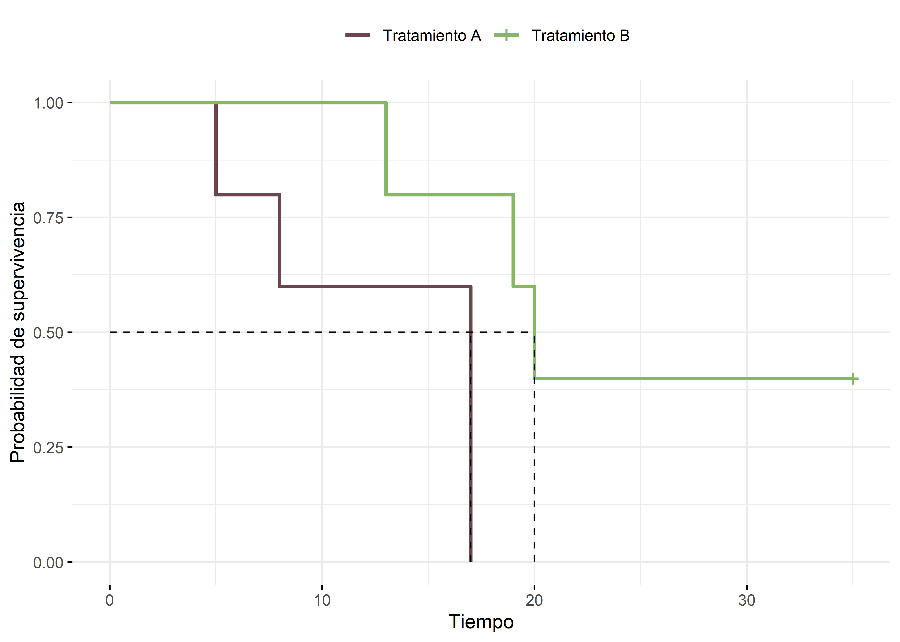
Si bien gráficamente podemos tener una idea, lo correcto es hacer una comparación en términos estadísticos. Por lo tanto, existen varios test que nos permiten comparar curvas de supervivencia. Uno de los más usados por los paquetes estadísticos es el log-rank test.
Log-rank test
La hipótesis nula (\(H_0\)) plantea que las supervivencias de los grupos que se comparan (2 o más) son iguales.
La hipótesis alternativa (\(H_1\)) sostiene que al menos uno de los grupos tiene una supervivencia diferente.
El estadístico de contraste utilizado es la chi-cuadrado (\(\chi^2\)) con \(k-1\) grados de libertad, donde \(k\) representa la cantidad de grupos (es decir, el número de curvas que se comparan). Esta prueba evalúa si la incidencia de eventos es similar en los distintos estratos.
La interpretación del valor \(p\) es similar a la de otros tests de hipótesis: típicamente, un valor \(p < 0,05\) se considera evidencia suficiente para rechazar la hipótesis nula, indicando diferencias estadísticamente significativas entre los grupos.
En la práctica médica, es frecuente comparar tratamientos o cohortes utilizando como criterio la supervivencia a cinco años. Sin embargo, esta estrategia puede ser engañosa. Es posible que dos curvas muy diferentes reflejen la misma supervivencia en ese único punto temporal. La Figura 8 ilustra claramente este problema.
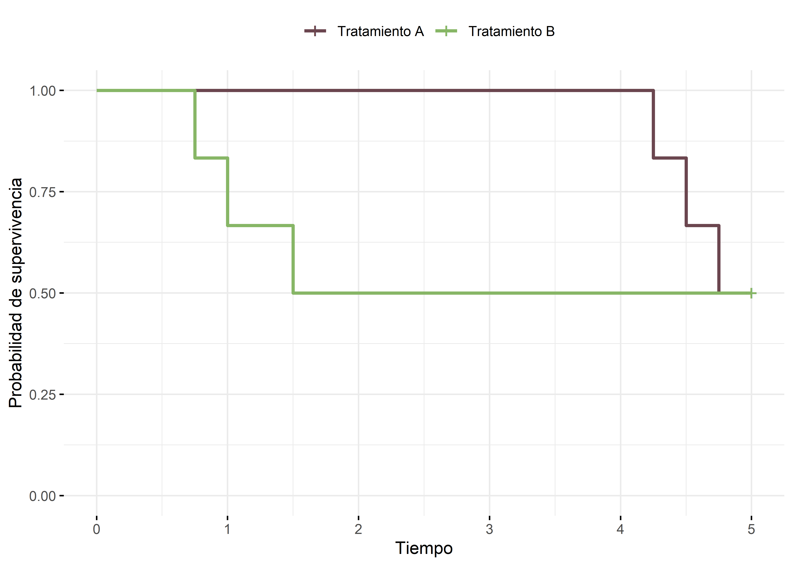
En la Figura 8, ambos grupos presentan una supervivencia del 50% a los 5 años. No obstante, se advierte que el grupo B experimenta una caída más temprana en la probabilidad de supervivencia, lo que indica un peor pronóstico desde los primeros momentos del seguimiento.
Los tests diseñados específicamente para comparar curvas de supervivencia, como el log-rank, consideran todo el trayecto temporal de las curvas, y no únicamente un punto aislado. Esto permite detectar diferencias persistentes en el tiempo.
El test de log-rank (también conocido como test de Mantel-Haenszel) es el más adecuado cuando el evento es poco frecuente o cuando las curvas son aproximadamente paralelas.
Si las curvas se cruzan en el tiempo —por ejemplo, si un grupo presenta mejor supervivencia inicialmente, pero luego el otro lo supera— conviene emplear el test de Wilcoxon (o de Breslow), que otorga mayor peso a las diferencias tempranas. Un tercer método menos utilizado es el test de Tarone-Ware, que aplica una ponderación intermedia donde se le da distinto peso a las diferencias según ocurran más precoz o más tardíamente a lo largo del seguimiento.
Hazard y Riesgo acumulado
Ya hemos estimado \(S(t)\), ahora nos falta abordar las otras funciones básicas de supervivencia
La expresión compleja de \(h(t)\), a los efectos de las Tablas de Supervivencia, puede reemplazarse por:
\[\lambda(t)=\frac{Número \; de \; \;eventos\;observados\;en\;cada\;intervalo}{personas\;en\;riesgo\;al\;inicio*amplitud\;intervalo}\]
De la misma forma que construimos \(S(t)\), podemos estimar \(h(t)\) (o un software puede hacerlo por nosotros). La Tabla 6, nos muestra las estimaciones para el ejemplo utilizado para KM.
| Tiempo | Individuos en riesgo | Eventos | Prob. evento | Prob. supervivencia | lambda(t) |
|---|---|---|---|---|---|
| 0 | 10 | 0 | 0.000 | 1.000 | 0.000 |
| 1 | 10 | 1 | 0.100 | 0.900 | 0.100 |
| 2 | 8 | 1 | 0.125 | 0.875 | 0.625 |
| 6 | 7 | 1 | 0.143 | 0.857 | 0.238 |
¿Qué expresa \(h(t)\) o \(\lambda(t)\)?
Observemos que la función de riesgo \(h(t)\) o \(\lambda(t)\) es una medida de la probabilidad de que se produzca el suceso estudiado entre los que quedan sin haber sufrido todavía tal suceso.
Es realmente una función que evalúa, puntualmente, en un período de tiempo determinado, la probabilidad de que un individuo de los que todavía no han sufrido tal suceso lo sufra precisamente en ese período de tiempo. Es, por lo tanto, realmente, una función que mide el riesgo en un período de tiempo concreto.
De forma similar, la expresión para el riesgo acumulado:
\[ H(t)=\int_0^t h(u)du \]
puede aproximarse como:
\[ \Lambda(t)=\sum\lambda(t)*intervalo \] No mostramos aquí los cálculos correspondientes para no agobiarlos más, pero pueden intentarlo si están motivados.
Intervalos de confianza y error estándar para la supervivencia
Si se desea calcular un intervalo de confianza (IC) para la probabilidad de supervivencia estimada en un tiempo determinado, es necesario considerar su error estándar (SE). El mismo se calcula en función de la supervivencia acumulada hasta ese momento, y representa la incertidumbre asociada a la estimación.
Una fórmula común para el error estándar de la estimación de supervivencia acumulada (\(S_t\)) en un tiempo dado es el producto de la supervivencia estimada para ese tiempo por la raíz de la suma de los cocientes entre el número de fallecidos en cada momento y el producto de supervivientes y pacientes en riesgo en ese tiempo:
\[ SE_{S_t}=S_t\sqrt{\sum\frac{n_i-s_i}{n_is_i}} \]
Para calcular el 95% IC, podríamos pensar en usar la fórmula que vimos inicialmente:
\[ 95\%~IC_{S_t} = S_t \pm 1,96 SE \qquad donde~1,96~es~el~valor~Z~para~un~alfa~bilateral~del~5\% \]
Con esta fórmula, en algunos casos se podría obtener, un límite inferior negativo o un límite superior mayor que 1. Ambos resultados carecen de sentido en un contexto de probabilidades.
Para evitar estos problemas, se utiliza una transformación logarítmica que estabiliza la varianza. La fórmula ajustada para el error estándar transformado es:
\[ SE_t=\sqrt{\frac{1}{(ln[S])^2}\times\sum\frac{n_i-s_i}{n_is_i}} \]
Y a partir de este \(SE_t\), calcular el intervalo de confianza al 95%, según la expresión:
\[ 95\%~IC = SE_t * exp(\pm1,96 SE_t) \]
Aunque todos estos cálculos pueden realizarse manualmente, las funciones del lenguaje R ya los incluyen al utilizar modelos de supervivencia. El propósito aquí es mostrar la lógica matemática detrás de dichas funciones.
Algunas otras medidas de supervivencia
En la literatura científica, muchas veces nos encontramos con otras medidas de supervivencia, que puntualizaremos a continuación:
Supervivencia a 5 años: es el número de personas aún vivas después de 5 años del diagnóstico.
Supervivencia media: tener en cuenta sólo aquellos individuos de los que se tienen datos completos y se conoce con exactitud su situación clínica. Esta se calcula por:
\[ S \;media=\frac{\sum tiempo\;hasta\;alcanzar\;el\;evento}{numero\;total\;de\;individuos\;que\;tuvieron\;el\;evento} \]
- Tasa de supervivencia: Se obtiene según la fórmula
\[ Tasa\;de\;supervivencia= \frac{nro.\;de\;individuos\;que\;sobreviven\;hasta\;un\;tiempo\;t}{nro.\;total\;de\;individuos} \]
- Tasa de Incidencia: Puede calcularse también una tasa de incidencia del evento de interés
\[ Tasa\;de\;incidencia=\frac{numero\; de\; eventos}{\sum tiempo-persona \; en\;seguimiento} \]
Ejemplo práctico en R
A continuación, veremos un ejemplo para aprender a realizar un análisis de supervivencia en R, utilizando datos de pacientes con leucemia mieloide crónica (LMC) almacenados en el archivo “tmo.txt”.
Hasta hace pocos años, el trasplante de médula ósea (TMO) a partir de un donante compatible era el único tratamiento disponible para la LMC. Sin embargo, este procedimiento presenta diversos desafíos: una de las complicaciones más frecuentes es la enfermedad injerto contra huésped, que afecta entre el 25 y el 30 % de los pacientes trasplantados. También pueden presentarse efectos adversos vinculados a tratamientos previos como la quimioterapia o la radioterapia. El pronóstico de los pacientes sometidos a TMO se asocia además, con la fase de la enfermedad en el momento del trasplante: aquellos trasplantados durante la fase crónica inicial suelen presentar una mayor probabilidad de supervivencia.
El Centro de Trasplante de Médula Ósea del Instituto Nacional del Cáncer de Brasil, entre 1986 y 1998 realizó 96 trasplantes de médula ósea para tratamiento de LMC. El análisis de los datos de esta cohorte tuvo como objetivo identificar factores que pudieran estar relacionados con el pronóstico, ya sea para orientar intervenciones profilácticas o terapéuticas que mejoren los resultados, o para evaluar la conveniencia de alternativas terapéuticas en subgrupos de alto riesgo.
Existen numerosas librerías para el análisis de supervivencia, nosotros aquí usaremos los paquetes survival (Therneau 2024) y survminer(Kassambara, Kosinski, y Biecek 2024), este último provee funciones que facilitan el análisis y la visualización de datos de supervivencia. Comenzamos cargando los paquetes:
library(survival)
library(survminer)
library(tidyverse)A continuación cargamos los datos y exploramos su estructura:
datos <- read_csv2("datos/tmo.txt")Las variables presentes en el conjunto de datos son las siguientes:
id: identificador único del pacientesexo: sexo biológico (M = masculino, F = femenino)edad: edad en años al momento del trasplantestatus: estado al final del seguimiento (1 = fallecido, 0 = censurado)tiempo: tiempo hasta la fecha de óbito o censuradeag: presencia de enfermedad injerto-huesped agudadecr: presencia de enfermedad injerto-huesped crónicafase: fase de la LMC (aguda, crónica, crisis blástica)
El evento de interés es “muerte pos-trasplante”. Comenzaremos por utilizar la función Surv(), que toma como argumentos time y event y devuelve un objeto de supervivencia que se utiliza como insumo para los análisis posteriores. La función survfit() toma ese objeto y construye las curvas de supervivencia correspondientes.
Nos centraremos en la construcción de objetos de supervivencia a partir de datos con censura a la derecha, ya que es el tipo más común en estudios longitudinales. En este tipo de censura, solo necesitamos dos argumentos para Surv(). Para explorar otras formas de censura (por ejemplo, censura por intervalo o truncamiento), se recomienda consultar la documentación del paquete survival.
Generamos el objeto de supervivencia usando las variables tiempo y status:
global <- Surv(time = datos$tiempo, event = datos$status)
# Explorar el objeto de supervivencia
global [1] 1000+ 39 434 69 672 98 1000+ 415 261 65 1000+ 1000+
[13] 1000+ 347 453 281 1000+ 185 1000+ 79 1000+ 1000+ 475 1000+
[25] 100 313 1000+ 128 427 84 214 200 120 83 1000+ 149
[37] 1000+ 70 1000+ 1000+ 54 101 162 216 63 1000+ 1000+ 1000+
[49] 1000+ 1000+ 571+ 71 1000+ 31 907+ 210 32 865+ 139 980+
[61] 320+ 78 40 753+ 846+ 774+ 522 48 587+ 76 468+ 434
[73] 452+ 487+ 586 536+ 89+ 425 531+ 371 489+ 445+ 243+ 362+
[85] 370 263 383+ 74 229+ 236+ 104 110+ 54+ 54+ 32 342+Al llamar el objeto, veremos que algunas observaciones aparecen con el símbolo +, indicando que han sido censuradas a la derecha.
La función survfit() crea curvas de supervivencia a partir de una fórmula. A continuación, ajustaremos un modelo Kaplan-Meier para estimar la curva de supervivencia global:
KM <- survfit(global ~ 1)
# Explorar el modelo de supervivencia
KMCall: survfit(formula = global ~ 1)
n events median 0.95LCL 0.95UCL
[1,] 96 49 453 370 NAAlgunos de los argumentos opcionales de la función son los siguientes:
conf.int: permite modificar el nivel de confianza (por ejemplo,conf.int = 0.90)conf.type: define el método de construcción del intervalo:"log"(por defecto): usa transformación logarítmica: \(g(t) = log(t)\)"log-log": usa \(g(t) = log(-log(t))\)"plain": intervalo lineal sin transformación.
El objeto KM contiene información detallada: número de observaciones, cantidad de eventos observados, mediana del tiempo de supervivencia y su intervalo de confianza. Además, al tratarse de un objeto de tipo lista, podemos acceder a información adicional con los siguiente comandos:
# devuelve las estimaciones de Kaplan-Meier a cada t_i
KM$surv [1] 0.9895833 0.9687500 0.9583333 0.9479167 0.9375000 0.9270833 0.9164272
[8] 0.9057711 0.8951149 0.8844588 0.8738027 0.8631466 0.8524904 0.8418343
[15] 0.8311782 0.8205220 0.8098659 0.8098659 0.7990677 0.7882695 0.7774713
[22] 0.7666731 0.7666731 0.7557206 0.7447681 0.7338156 0.7228632 0.7119107
[29] 0.7009582 0.6900057 0.6790533 0.6681008 0.6571483 0.6571483 0.6571483
[36] 0.6571483 0.6456194 0.6340905 0.6225616 0.6110327 0.6110327 0.6110327
[43] 0.5990516 0.5990516 0.5868261 0.5746005 0.5746005 0.5621092 0.5496179
[50] 0.5371266 0.5121440 0.5121440 0.5121440 0.4990121 0.4990121 0.4855252
[57] 0.4855252 0.4855252 0.4712451 0.4712451 0.4712451 0.4712451 0.4555369
[64] 0.4555369 0.4392677 0.4392677 0.4392677 0.4392677 0.4392677 0.4392677
[71] 0.4392677 0.4392677# {t_i}
KM$time [1] 31 32 39 40 48 54 63 65 69 70 71 74 76 78 79
[16] 83 84 89 98 100 101 104 110 120 128 139 149 162 185 200
[31] 210 214 216 229 236 243 261 263 281 313 320 342 347 362 370
[46] 371 383 415 425 427 434 445 452 453 468 475 487 489 522 531
[61] 536 571 586 587 672 753 774 846 865 907 980 1000# {Y_i}
KM$n.risk [1] 96 95 93 92 91 90 87 86 85 84 83 82 81 80 79 78 77 76 75 74 73 72 71 70 69
[26] 68 67 66 65 64 63 62 61 60 59 58 57 56 55 54 53 52 51 50 49 48 47 46 45 44
[51] 43 41 40 39 38 37 36 35 34 33 32 31 30 29 28 27 26 25 24 23 22 21# {d_i}
KM$n.event [1] 1 2 1 1 1 1 1 1 1 1 1 1 1 1 1 1 1 0 1 1 1 1 0 1 1 1 1 1 1 1 1 1 1 0 0 0 1 1
[39] 1 1 0 0 1 0 1 1 0 1 1 1 2 0 0 1 0 1 0 0 1 0 0 0 1 0 1 0 0 0 0 0 0 0# error estándar de las estimaciones de K-M a {t_i}
KM$std.err [1] 0.01047135 0.01833089 0.02128141 0.02392372 0.02635231 0.02862321
[7] 0.03086977 0.03301123 0.03506847 0.03705709 0.03898920 0.04087437
[13] 0.04272043 0.04453385 0.04632006 0.04808377 0.04982901 0.04982901
[19] 0.05160533 0.05336878 0.05512246 0.05686918 0.05686918 0.05866126
[25] 0.06045058 0.06223956 0.06403050 0.06582557 0.06762684 0.06943634
[31] 0.07125603 0.07308784 0.07493368 0.07493368 0.07493368 0.07493368
[37] 0.07699571 0.07907601 0.08117706 0.08330139 0.08330139 0.08330139
[43] 0.08562288 0.08562288 0.08807070 0.09055225 0.09055225 0.09318156
[49] 0.09585329 0.09857177 0.10416729 0.10416729 0.10416729 0.10735729
[55] 0.10735729 0.11079864 0.11079864 0.11079864 0.11475018 0.11475018
[61] 0.11475018 0.11475018 0.11965379 0.11965379 0.12505911 0.12505911
[67] 0.12505911 0.12505911 0.12505911 0.12505911 0.12505911 0.12505911# estimaciones puntuales inferiores (alternativamente, $upper)
KM$lower [1] 0.9694806 0.9345627 0.9191827 0.9044952 0.8903077 0.8765055 0.8626241
[8] 0.8490226 0.8356578 0.8224974 0.8095165 0.7966952 0.7840176 0.7714705
[15] 0.7590431 0.7467260 0.7345115 0.7345115 0.7221992 0.7099816 0.6978531
[22] 0.6858088 0.6858088 0.6736413 0.6615542 0.6495440 0.6376072 0.6257411
[29] 0.6139430 0.6022106 0.5905417 0.5789346 0.5673875 0.5673875 0.5673875
[36] 0.5673875 0.5551850 0.5430523 0.5309875 0.5189890 0.5189890 0.5189890
[43] 0.5065029 0.5065029 0.4937914 0.4811581 0.4811581 0.4682787 0.4554811
[50] 0.4427639 0.4175656 0.4175656 0.4175656 0.4043229 0.4043229 0.3907508
[57] 0.3907508 0.3907508 0.3763321 0.3763321 0.3763321 0.3763321 0.3603082
[64] 0.3603082 0.3437786 0.3437786 0.3437786 0.3437786 0.3437786 0.3437786
[71] 0.3437786 0.3437786También puede obtenerse un resumen completo mediante:
summary(KM)Call: survfit(formula = global ~ 1)
time n.risk n.event survival std.err lower 95% CI upper 95% CI
31 96 1 0.990 0.0104 0.969 1.000
32 95 2 0.969 0.0178 0.935 1.000
39 93 1 0.958 0.0204 0.919 0.999
40 92 1 0.948 0.0227 0.904 0.993
48 91 1 0.938 0.0247 0.890 0.987
54 90 1 0.927 0.0265 0.877 0.981
63 87 1 0.916 0.0283 0.863 0.974
65 86 1 0.906 0.0299 0.849 0.966
69 85 1 0.895 0.0314 0.836 0.959
70 84 1 0.884 0.0328 0.822 0.951
71 83 1 0.874 0.0341 0.810 0.943
74 82 1 0.863 0.0353 0.797 0.935
76 81 1 0.852 0.0364 0.784 0.927
78 80 1 0.842 0.0375 0.771 0.919
79 79 1 0.831 0.0385 0.759 0.910
83 78 1 0.821 0.0395 0.747 0.902
84 77 1 0.810 0.0404 0.735 0.893
98 75 1 0.799 0.0412 0.722 0.884
100 74 1 0.788 0.0421 0.710 0.875
101 73 1 0.777 0.0429 0.698 0.866
104 72 1 0.767 0.0436 0.686 0.857
120 70 1 0.756 0.0443 0.674 0.848
128 69 1 0.745 0.0450 0.662 0.838
139 68 1 0.734 0.0457 0.650 0.829
149 67 1 0.723 0.0463 0.638 0.820
162 66 1 0.712 0.0469 0.626 0.810
185 65 1 0.701 0.0474 0.614 0.800
200 64 1 0.690 0.0479 0.602 0.791
210 63 1 0.679 0.0484 0.591 0.781
214 62 1 0.668 0.0488 0.579 0.771
216 61 1 0.657 0.0492 0.567 0.761
261 57 1 0.646 0.0497 0.555 0.751
263 56 1 0.634 0.0501 0.543 0.740
281 55 1 0.623 0.0505 0.531 0.730
313 54 1 0.611 0.0509 0.519 0.719
347 51 1 0.599 0.0513 0.507 0.709
370 49 1 0.587 0.0517 0.494 0.697
371 48 1 0.575 0.0520 0.481 0.686
415 46 1 0.562 0.0524 0.468 0.675
425 45 1 0.550 0.0527 0.455 0.663
427 44 1 0.537 0.0529 0.443 0.652
434 43 2 0.512 0.0533 0.418 0.628
453 39 1 0.499 0.0536 0.404 0.616
475 37 1 0.486 0.0538 0.391 0.603
522 34 1 0.471 0.0541 0.376 0.590
586 30 1 0.456 0.0545 0.360 0.576
672 28 1 0.439 0.0549 0.344 0.561Para graficar la función de supervivencia usaremos la función ggsurvplot() del paquete survminer:
ggsurvplot(KM, data = datos)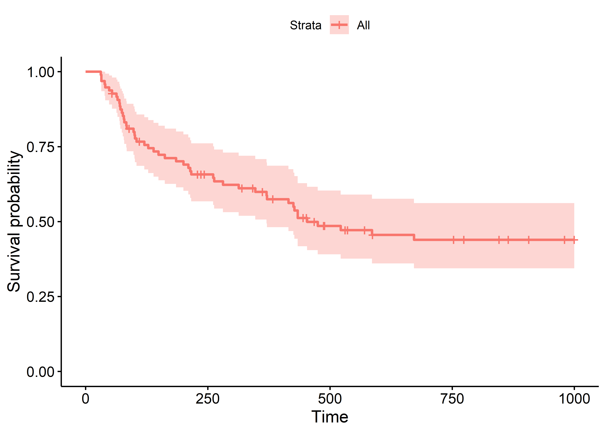
Como se esperaba, la gráfica nos muestra las probabilidades decrecientes de supervivencia a medida que pasa el tiempo. El sombreado alrededor de la curva representa el intervalo de confianza para cada estimación puntual. Más adelante exploraremos cómo personalizar estos gráficos para mejorar su presentación e interpretación.
Comparación de curvas de supervivencia
Intentaremos ahora verificar los factores pronósticos para el tiempo de supervivencia pos-trasplante. Recordemos que el evento a considerar es “muerte pos-trasplante”. Como herramienta exploratoria, utilizaremos las curvas de supervivencia estimadas por el método de Kaplan Meier según las covariables: sexo, Enfermedad injerto crónica (decr), Enfermedad injerto aguda (deag) y fase. Esta parte es equivalente al análisis bivariado que realizamos en regresión lineal y logística. Recordemos que la variable que representa los tiempos de supervivencia es tiempo y la que representa el evento o la censura es status.
Comenzaremos evaluando las curvas de Kaplan Meier en forma visual, y las completaremos con la información del log-rank test, que nos permite comparar dos funciones de supervivencia.
Definimos la función de supervivencia para sexo, usando el objeto de supervivencia creado anteriormente:
kmsex <- survfit(global ~ sexo, data = datos)Graficamos la curva de supervivencia:
ggsurvplot(kmsex, data = datos)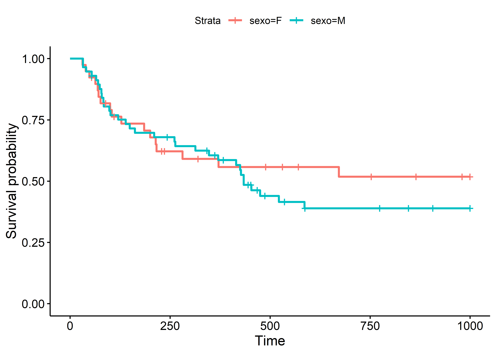
Para comparar ambas funciones de supervivencia se debe ejecutar la función survdiff():
logrank <- survdiff(global ~ sexo, data = datos)
logrankCall:
survdiff(formula = global ~ sexo, data = datos)
N Observed Expected (O-E)^2/E (O-E)^2/V
sexo=F 39 17 19.4 0.305 0.508
sexo=M 57 32 29.6 0.201 0.508
Chisq= 0.5 on 1 degrees of freedom, p= 0.5 Podemos resumir toda la información en un único gráfico, e incluso sumarle información adicional, de acuerdo a cómo personalicemos dicho gráfico:
ggsurvplot(
kmsex,
data = datos,
1 size = 1,
2 palette = c("#A36267", "#515A79"),
3 conf.int = TRUE,
4 pval = TRUE,
5 risk.table = TRUE,
6 risk.table.col = "strata",
7 legend.labs = c("Femenino", "Masculino"),
8 risk.table.height = 0.25,
9 ggtheme = theme_bw()
)- 1
- Cambia el grosor de la línea
- 2
- Personaliza las paletas de colores
- 3
- Agrega intervalo de confianza
- 4
- Agrega p-valor
- 5
- Agrega tabla de riesgo
- 6
- Tabla de riesgos con diferente color según grupo
- 7
- Cambia etiqueta de la leyenda
- 8
- Útil para cambiar cuando se tienen múltiples grupos
- 9
-
Cambia el tema de
ggplot2
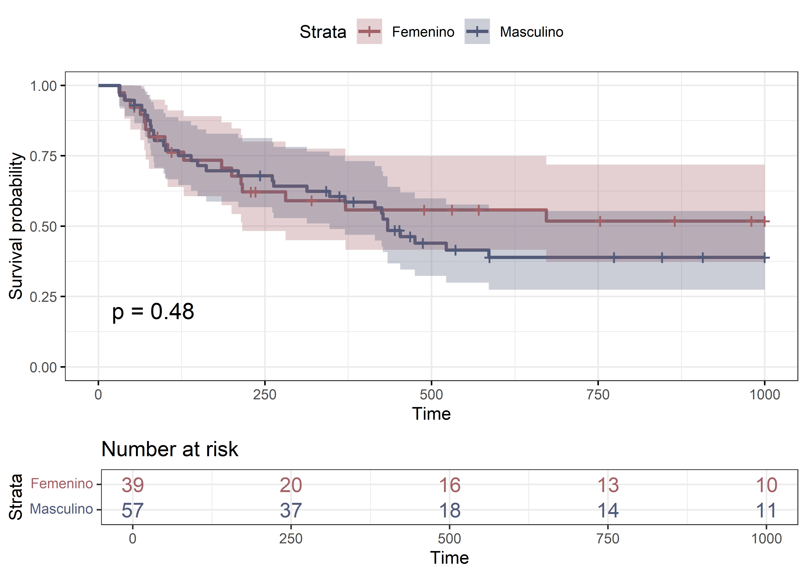
Hagamos lo mismo para las restantes variables del ejemplo:
Enfermedad injerto aguda:
# Función de supervivencia
kmdeag <- survfit(global ~ deag, data = datos)
# Generar curvas de supervivencia
ggsurvplot(
kmdeag,
data = datos,
size = 1,
palette = c("#A36267", "#515A79"),
conf.int = TRUE,
pval = TRUE,
risk.table = TRUE,
risk.table.col = "strata",
legend.labs = c("NO", "SI"),
risk.table.height = 0.25,
ggtheme = theme_bw()
)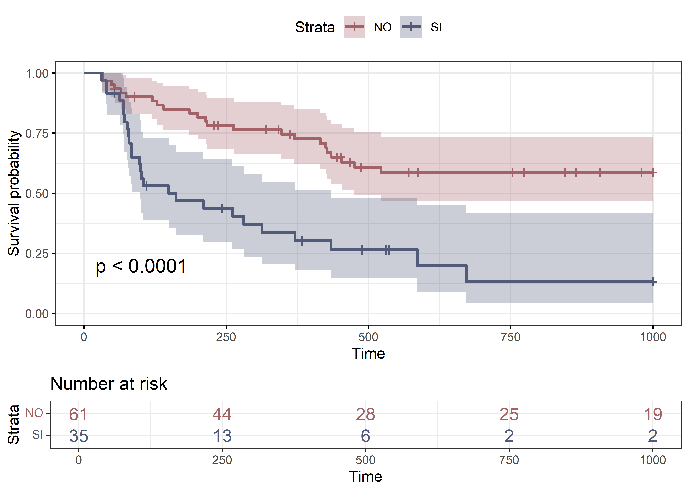
# Test de log-rank
logrank <- survdiff(global ~ deag, data = datos)
logrankCall:
survdiff(formula = global ~ deag, data = datos)
N Observed Expected (O-E)^2/E (O-E)^2/V
deag=no 61 23 36.2 4.79 18.8
deag=si 35 26 12.8 13.50 18.8
Chisq= 18.8 on 1 degrees of freedom, p= 1e-05 Enfermedad injerto crónica:
# Función de supervivencia
kmdecr <- survfit(global ~ decr, data = datos)
# Generar curvas de supervivencia
ggsurvplot(
kmdecr,
data = datos,
size = 1,
palette = c("#A36267", "#515A79"),
conf.int = TRUE,
pval = TRUE,
risk.table = TRUE,
risk.table.col = "strata",
legend.labs = c("NO", "SI"),
risk.table.height = 0.25,
ggtheme = theme_bw()
)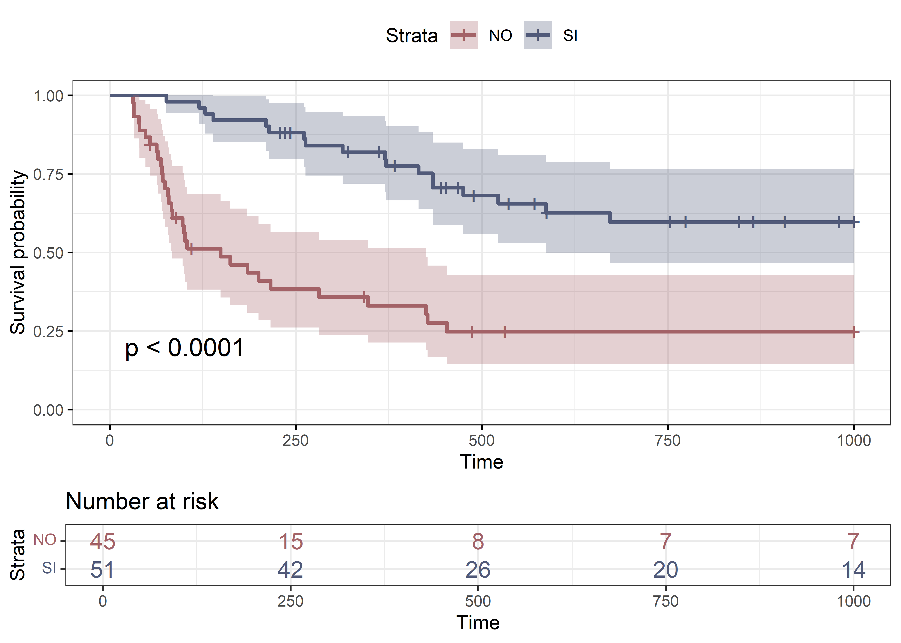
# Test de log-rank
logrank <- survdiff(global ~ decr, data = datos)
logrankCall:
survdiff(formula = global ~ decr, data = datos)
N Observed Expected (O-E)^2/E (O-E)^2/V
decr=no 45 31 15.7 14.94 22.6
decr=si 51 18 33.3 7.04 22.6
Chisq= 22.6 on 1 degrees of freedom, p= 2e-06 Fase de la leucemia:
# Función de supervivencia
kmfase <- survfit(global ~ fase, data = datos)
# Generar curvas de supervivencia
ggsurvplot(
kmfase,
data = datos,
size = 1,
palette = c("#A36267", "#515A79", "#E99973"),
conf.int = TRUE,
pval = TRUE,
risk.table = TRUE,
risk.table.col = "strata",
legend.labs = c("aguda", "cb", "crónica"),
risk.table.height = 0.25,
ggtheme = theme_bw()
)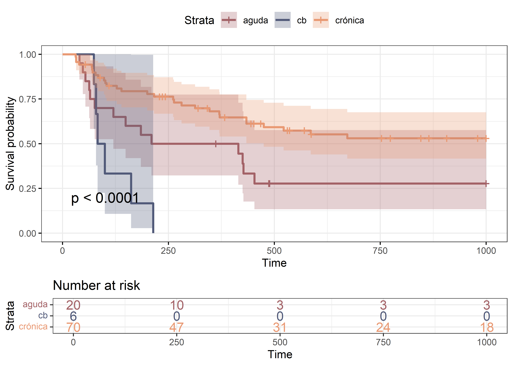
# Test de log-rank
logrank <- survdiff(global ~ fase, data = datos)
logrankCall:
survdiff(formula = global ~ fase, data = datos)
N Observed Expected (O-E)^2/E (O-E)^2/V
fase=aguda 20 14 8.73 3.19 3.9
fase=cb 6 6 1.50 13.49 14.3
fase=crónica 70 29 38.77 2.46 12.0
Chisq= 19.7 on 2 degrees of freedom, p= 5e-05 ¿Qué podemos concluir a partir de las curvas de KM? Observando cada gráfico detenidamente, vemos que:
Para la variable
sexo, las curvas se superponen bastante. Es decir que parece razonable suponer que no existe diferencia en la supervivencia pos-trasplante de hombres y mujeres. Dado la forma de las curvas, parecería más correcto emplear el test de Wilcoxon. De todas formas, el valor de ambos test indica lo que ya habíamos predicho observando el gráfico: que no hay diferencia en las curvas de supervivencia entre hombres y mujeres.Se observa diferencia en las curvas de supervivencia de los pacientes según hayan padecido o no enfermedad injerto contra huésped aguda (
deag), con menor supervivencia para quienes la padecieron.Se observa diferencia en las curvas de supervivencia de los pacientes según hayan padecido o no enfermedad injerto contra huésped crónica (
decr), con menor supervivencia para quienes no la padecieron.Se observa diferencia en las curvas de supervivencia de los pacientes según la fase de la enfermedad en la que se encontraban al momento del trasplante. Observen que la variable
fasetiene 3 categorías. El valor del log Rank test nos indica que hay diferencia en la supervivencia de las categorías, pero no nos dice si las 3 son distintas o si sólo una difiere de las otras dos. De la observación del gráfico podemos concluir que los pacientes que sufren crisis blástica (cb) tienen una supervivencia menor, de hecho aproximadamente a los 200 días fallecen todos.
Recordamos que KM estratifica por variables cualitativas, por lo tanto edad no puede ser evaluada de esta forma. Podría recodificarse si, para el evento en cuestión, el marco teórico señalara alguna edad de corte. Volveremos sobre este ejemplo cuando abordemos el modelo de regresión de Cox.
Función de riesgo
En algunas situaciones, dependiendo del evento que estemos considerando, puede resultar más fácil de interpretar la función de riesgo en lugar de la función de supervivencia. En nuestro ejemplo, el evento considerado es el “tiempo hasta la muerte pos-trasplante”, y en este contexto la función de supervivencia se interpreta fácilmente.
Sin embargo, en otros escenarios —por ejemplo, cuando el evento es la aparición de una infección, una recaída o una complicación— la interpretación de la función de supervivencia puede no ser tan directa. En esos casos, puede ser más útil representar la función de riesgo acumulado, que muestra la acumulación del riesgo del evento a lo largo del tiempo.
Una vez definidos los objetos de supervivencia, podemos utilizar la opción fun = "cumhaz" dentro de la función ggsurvplot() para graficar la función de riesgo acumulado:
ggsurvplot(
kmsex,
data = datos,
fun= "cumhaz",
size = 1,
palette = c("#A36267", "#515A79"),
conf.int = TRUE,
pval = TRUE,
risk.table = TRUE,
risk.table.col = "strata",
legend.labs = c("Femenino", "Masculino"),
risk.table.height = 0.25,
ggtheme = theme_bw()
)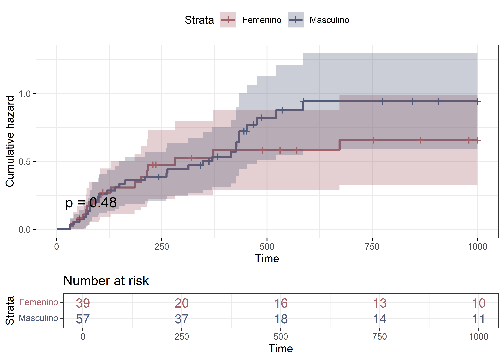
Con el argumento fun="cumhaz" le indicamos a ggsurvplot() que grafique la función de riesgo acumulado. Este mismo procedimiento puede aplicarse a todos los objetos de supervivencia creados previamente.
Referencias
Escuela Nacional de Sanidad (ENS). Instituto de Salud Carlos III. Ministerio de Ciencias e Innovación. Madrid. 2009. Manual docente de la Escuela Nacional de Sanidad: Método Epidemiológico.
Hernández-Ávila, Mauricio. 2011. Epidemiología: diseño y análisis de estudios. Buenos Aires: Editorial Médica Panamericana.
Kassambara, Alboukadel, Marcin Kosinski, y Przemyslaw Biecek. 2024. «survminer: Drawing Survival Curves using ’ggplot2’». https://CRAN.R-project.org/package=survminer.
Royo-Bordonada, Miguel Angel, Javier Damian, Beatriz Perez-Gomez, Fernando Rodríguez-Artalejo, Fernando Villar Alvarez, Gonzalo Lopez-Abente, Iñaki Imaz-Iglesia, et al. 2009. Método epidemiológico. Instituto de Salud Carlos III (ISCIII). Escuela Nacional de Sanidad (ENS). http://hdl.handle.net/20.500.12105/5271.
Therneau, Terry M. 2024. «A Package for Survival Analysis in R». https://CRAN.R-project.org/package=survival.
Woodward, M. 2005. Epidemiology: Study Design and Data Analysis. Texts en statistical science. Chapman & Hall/CRC. https://books.google.com.ar/books?id=kcDHxgEACAAJ.